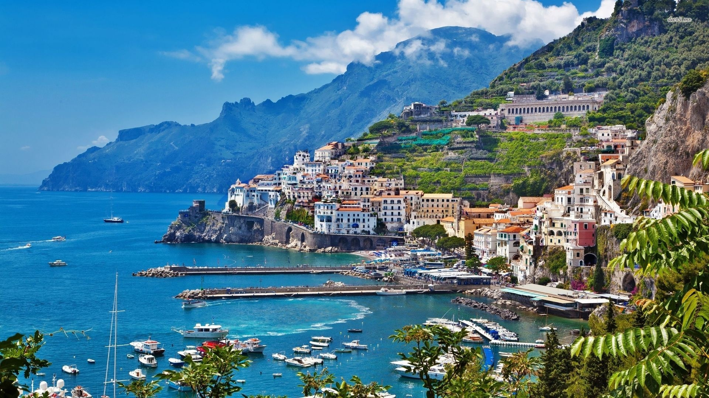
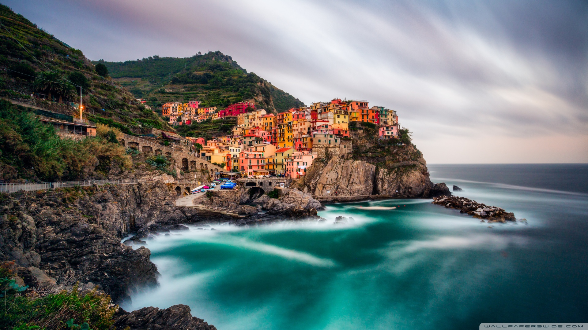

Вітаємо в Італії!
Італія – це країна, яка вражає своєю різноманітністю та багатством культури. Ви зможете насолодитися смачною італійською кухнею, де піца, паста та грибне ризотто – це лише маленька частина ваших смаколиків. Італійська архітектура залишить вас у захваті: Колізей у Римі, Вежа Пізанська у Пізі, Ватиканські музеї – це всього лише кілька чудес, які ви зможете побачити.
Чому варто відвідати Італію?
Італія – це місце, де традиції поєднуються з сучасністю, а величність минулого переплітається з енергією сьогодення. Тут ви зможете насолодитися сонячним узбережжям Амальфі, відвідати романтичний Венецію та місто моди – Мілан. Італія пропонує незабутні враження від мистецтва, гастрономії та природи. Ця країна точно заслуговує на вашу увагу.
Особливості Італії
Італія славиться своєю гостинністю та відома світовою спадщиною, такою як Ренесанс. Тут ви зможете відвідати безліч музеїв і галерей, де зібрані шедеври мистецтва. Неабиякі архітектурні пам'ятки, чарівні містечка на гірських схилах, та розкішні вина – це все Італія. А ще тут ви зможете відчути неперевершений дух свята та радості життя на вулицях міст та селень. Тому не вагайтеся, відвідайте цю чудову країну та зануртесь у безмежний світ італійських чар і традицій.